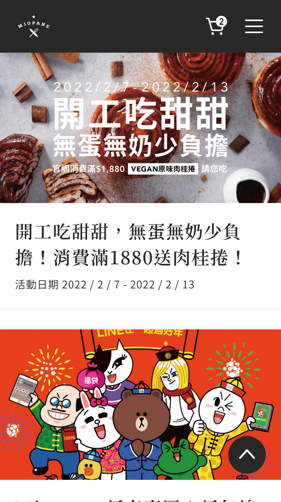
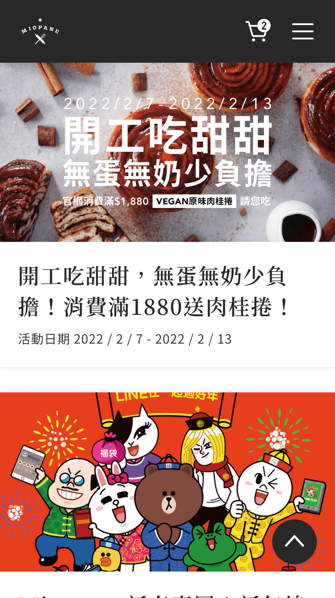

對原網站進行分析
觀察 Mipane 原本的網站，可以發現它是購物導向的，沒有讓使用者了解到品牌特色，主要都在介紹新商物或活動，跟品牌形象不相符。而且網站的整體架構與層級關係都十分凌亂，讓使用者難以使用。

Miopane 是位於天母的義式餐廳「Miacucina」的衍生品牌，Miopane 希望製作出讓家人也能吃得安心的烘焙食品，因此非常重視健康，產品皆無任何添加物，而且標明素別，讓客人吃得安心又滿足。我以原本的網站為基礎，重新整理了混亂的網站架構及內容的層級關係，並強調品牌素食、健康、環保的特色。
觀察 Mipane 原本的網站，可以發現它是購物導向的，沒有讓使用者了解到品牌特色，主要都在介紹新商物或活動，跟品牌形象不相符。而且網站的整體架構與層級關係都十分凌亂，讓使用者難以使用。
參考品牌 Logo 及店面裝潢後，選用了深灰為主色，藍綠色和黃色為輔助色。特別注意維持美感同時兼具實用性，讓整個使用者旅程順暢，不會遇到困難。


 
